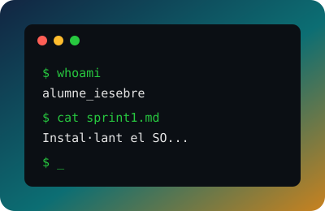

Alumne/a: Laila Choubani
Curs: 2026-2027
Centre: IES Ebre
Repositori: sistemes_operatius
Projecte Ubuntu → Projecte Windows →
Llicència d'aquest treball
Aquest treball està publicat sota la llicència Creative Commons Reconeixement–NoComercial–SenseObraDerivada 4.0 Internacional (CC BY-NC-ND 4.0). Pots veure'n i compartir-ne el contingut sempre que en citis l'autoria i no en facis un ús comercial ni en creïs obres derivades.